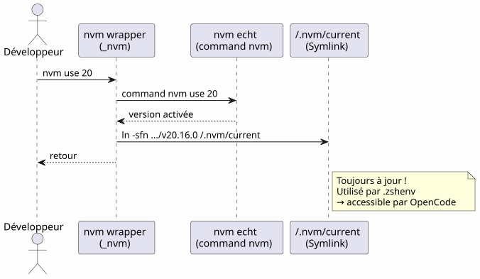
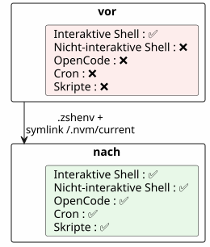

OpenCode und der unvollständige PATH: Warum deine Tools nicht im Shell des Agents waren
Publié le 21 April 2026
- Die Szene: ein blinder Agent in einer Welt der Werkzeuge
- Anatomie des Bugs: zwei Shells, zwei Welten
- Die Schuldigen: .zshrc vs .zshenv
- Schritt-für-Schritt-Diagnose
- Die Lösung: .zshenv + die richtigen Pfade
- Der NVM-Fall: Wenn der Versionsmanager vergisst, eine Spur zu hinterlassen
- Zusammenfassungstabelle der Pfade
- Fallstricke und Gegenmaßnahmen
- Gelernte Lektionen
- Endkontrolle
- Links
Sie starten OpenCode in Ihrem Terminal, alles funktioniert. Der Agent versucht ein`gh`— nicht auffindbar. Ein`java -version`— abwesend. ein`node`— nirgendwo. Doch diese Tools sind tatsächlich in deiner Shell vorhanden. Das Problem? OpenCode startet Shellsnicht-interaktivdie nie Ihre lesen`.zshrc`Hier ist, wie man das sauber diagnostizieren und korrigieren kann.
- Tick
-
[]
Die Szene: ein blinder Agent in einer Welt der Werkzeuge
Es war ein Dienstagabend. Ich hatte gerade installierthttps://opencode.ai[OpenCode], l’agent IA qui promettait de transformer ma façon de coder. Premier test : lui demander de lister mes dépôts GitHub.
$ opencode
> Utilise gh pour lister mes repos
❌ bash: gh: command not foundSeltsam.`gh`funktionierte perfekt in meinem Terminal. Ich versuche etwas anderes:
> Vérifie la version de Java
❌ bash: java: command not foundDann:
> Lance le build Gradle
❌ bash: gradle: command not foundJava, Gradle, Node,gh— Alles war für den Agenten unsichtbar. Mein Terminal selbst sah alles. Als ob der Agent und ich in zwei parallelen Welten lebten.
Ich habe Stunden gebraucht, um es zu verstehen. Stunden von`echo $PATH`, de which java, wachsender Frustration. Ich habe schließlich verstanden, dass das Problem nicht die Tools waren — es war dasSchale. OpenCode, wie jeder Agent, der Unterprozesse startet, arbeitet in Shellsnicht-interaktiv. Und Zsh, in diesen Shells, ignoriert einfach nur Ihr`.zshrc`.
Das Folgende ist der vollständige Bericht über diese Diagnose, die Lösung und die Lektion, die ich gelernt habe. Wenn Sie einen KI-Agenten verwenden — OpenCode, Aider, Cursor oder sogar Cron-Skripte — wird Sie dieses Problem eines Tages betreffen.
Anatomie des Bugs: zwei Shells, zwei Welten
Wenn Sie ein Terminal öffnen, behandelt Zsh es wie eine Shellinteraktiv. Er lädt`.zshrc`, das alles initialisiert: SDKMAN, NVM, pnpm, die Aliase, dein schöner Prompt. Deine Umgebung ist vollständig.
Aber wenn OpenCode einen Befehl ausführt, startet es kein interaktives Terminal. Es startet eine Shell.nicht-interaktiv— ein Aufgaben-Shell, ohne Mensch hinter dem Bildschirm. Und Zsh, in diesem Kontext, springt`.zshrc`. Er liest nur`.zshenv`.
Warum existiert diese Unterscheidung? Weil eine nicht-interaktive Shell dafür ausgelegt ist, Skripte auszuführen, nicht um einen menschlichen Nutzer zu bedienen. Das Laden von Aliases, dem Prompt und den Vervollständigungen in einem Skript, das im Hintergrund läuft, wäre eine Verschwendung. Das Problem ist, dass dein PATH — die wichtigste Information zum Auffinden von Ausführbaren — oft initialisiert in`.zshrc`, nicht in`.zshenv`.
Failed to generate image: PlantUML preprocessing failed: [From <input> (line 5) ] @startuml skinparam backgroundColor #FEFEFE actor "Sie" as user actor "OpenCode ^^^^^ Syntax Error? (Assumed diagram type: sequence) @startuml skinparam backgroundColor #FEFEFE actor "Sie" as user actor "OpenCode (Agent)" as agent participant "Shell\ninteraktiv\n(.zshrc geladen)" as ishell participant "Shell nicht-interaktiv (.zshrc ignoriert)" as nshell user -> ishell : gh, java, node ✅ agent -> nshell : gh, java, node ❌ note right of ishell Source .zshrc : - SDKMAN init - NVM init - ~/apps dans PATH - pnpm dans PATH end note note right of nshell .zshrc ignoré ! PATH = /usr/bin:/bin + quelques répertoires défaut end note @enduml
Die Wurzel des Problems:Zsh source .zshrc nur für interaktive Shells. OpenCode, wie jeder KI-Agent, der Unterprozesse startet, verwendet nicht-interaktive Shells. Diese Shells lesen nur`.zshenv`.
Die Schuldigen: .zshrc vs .zshenv
Zsh verfügt übervier Initialisierungsdateien, jeder mit einer bestimmten Rolle. Das ist ein elegantes Design — aber das ist auch das Knackpunkt des Problems:
Datei |
bezogen wenn |
Rolle |
PATH ändern? |
|
immer(interaktiv + nicht-interaktiv + Login) |
Wesentliche Umgebungsvariablen, PATH |
�✅ Ja — das ist SA Platz |
|
Nur Login-Shells |
Langsame Befehle (einmal pro Sitzung) |
möglich |
|
Nur interaktive Shells |
Alias, Prompt, Vervollständigung, interaktive Werkzeuge |
�❌ Nicht für kritische Variablen |
|
Login-Shells (nach .zshrc) |
Willkommensnachrichten, Abschluss |
selten |
Die Tabelle gibt einen Hinweis, aber sie muss tiefgehend verstanden werden. Denke daran wie die Zimmer eines Hauses:
-
`.zshenv`ist dasEingangshalle— Jedermann kommt dort vorbei, Besucher oder Bewohner. Wenn Sie etwas hier platzieren, kann jede Shell es sehen.
-
`.zshrc`ist derWohnzimmer— Nur die Bewohner (interaktive Shells) gehen dort hinein. Die Besucher (nicht-interaktive Shells) bleiben im Flur.
-
.zprofileet `.zlogin`Sie sind spezielle Stücke für Login-Shells (so wie wenn du dich per SSH einloggst).
Das Drama ist, dass die meisten von uns das PATH ins Wohnzimmer stellen. Und der KI-Agent hat niemals das Recht, hineinzugehen.
Das Problem in einem Diagramm :

Wenn Sie ein Terminal öffnen, ist Zsh interaktiv: es liest`.zshrc`, alles funktioniert. Wenn OpenCode eine Shell startet, um einen Befehl auszuführen, ist Zsh nicht-interaktiv: es springt`.zshrc`, liest nur`.zshenv`. Et si `.zshenv`existiert nicht oder enthält nicht den PATH — es ist die Wüste.
|
Warum macht Zsh das?Das ist eine Designwahl, die von Unix geerbt wurde. Eine nicht-interaktive Shell mussschnell et wiederholbar. Laden der Aliase, farbiger Prompts und der schwergewichtigen Initialisierungen von SDKMAN in einem Cron-Skript oder einem KI-Agent wäre langsam und fragil. Die Trennung ist daher sinnvoll :`.zshenv`im Wesentlichen (Variablen, PATH),`.zshrc`für den Komfort (aliases, prompt, ergänzen). Das Problem tritt auf, wenn man das Wesentliche in den Komfort legt. |
Schritt-für-Schritt-Diagnose
Bevor du korrigierst, musst du genau verstehen, was fehlt. Hier ist eine reproduzierbare Diagnosemethode — lege sie in deine Lesezeichen, wenn du mit KI-Agenten arbeitest.
Den PATH des Agenten überprüfen
Man vergleicht, was dein interaktives Terminal sieht, mit dem, was eine nicht‑interaktive Shell sieht — das heißt, was OpenCode sieht.
# Dans votre terminal interactif (tout fonctionne)
echo $PATH | tr ':' '\n' | grep -v '^/usr' | sortTypisches Ergebnis :
/home/cheroliv/apps
/home/cheroliv/.nvm/versions/node/v22.19.0/bin
/home/cheroliv/.sdkman/candidates/java/current/bin
/home/cheroliv/.sdkman/candidates/gradle/current/bin
/home/cheroliv/.local/share/pnpm
/home/cheroliv/.local/binJetzt simulieren wir, was der Agent sieht — eine nicht interaktive Shell:
# Shell non-interactif : pas de .zshrc
zsh -c 'echo $PATH' | tr ':' '\n' | grep -v '^/usr' | sortErgebnis:
/home/cheroliv/.local/binFünf von sechs Wegen sind verschwunden.Der Agent ist um 83 % seiner Umgebung beraubt. Es ist, als würde man dich bitten, ohne die Hälfte deiner Utensilien zu kochen – du könntest Wasser zum Kochen bringen, aber sonst kaum etwas.
|
Der Befehl`zsh -c 'echo $PATH'`ist IhrNummer-1-Diagnosetool. Wenn ein Werkzeug, das Sie täglich verwenden, im Ergebnis fehlt, kann Ihr KI-Agent es ebenfalls nicht sehen. Testen Sie es vor und nach jeder Änderung von`.zshenv`. |
2. Identifiziere, was in .zshrc ist, aber nicht in .zshenv
Jetzt sucht man den Schuldigen in`.zshrc`. Wir filtern die Zeilen, die unsere Tools erwähnen :
grep -n 'apps\|SDKMAN\|NVM\|PNPM\|PATH' ~/.zshrcMan findet typischerweise:
119: PATH="/usr/bin/python3:$HOME/apps:$PATH" # ← pas exporté !
171: export NVM_DIR="$HOME/.nvm"
172: [ -s "$NVM_DIR/nvm.sh" ] && \. "$NVM_DIR/nvm.sh" # ← NVM init
176: nvm use --lts --silent # ← active une version
179: export PNPM_HOME="/home/cheroliv/.local/share/pnpm"
187: export SDKMAN_DIR="$HOME/.sdkman"
188: [[ -s "$HOME/.sdkman/bin/sdkman-init.sh" ]] && source "$HOME/.sdkman/bin/sdkman-init.sh"Das ist allesunsichtbarfür OpenCode. Und das`PATH`Zeile 119 ist sogar nicht`export`é — er verlässt niemals die aktuelle Shell. Das ist ein entscheidendes technisches Detail: eine Variable ohne`export`bleibt lokal bei der Shell, die sie definiert. Unter-Shells — wie jene, die von OpenCode gestartet werden — erben sie niemals.
3. Überprüfen, ob .zshenv existiert
cat ~/.zshenv 2>/dev/null || echo "FICHIER ABSENT"Wenn die Antwort « DATEI FEHLT » lautet, ist das der Moment, an dem alles entschieden wird.
Die Lösung: .zshenv + die richtigen Pfade
Die Strategie ist einfach, aber sie erfordert Präzision: hineinzulegen`.zshenv` nurdie wesentlichen Pfade, ohne das Sourcen der schweren Initialisierungsskripte. Man verschiebt nicht`.zshrc`in`.zshenv`— Wir extrahieren das Wesentliche.
Erstelle .zshenv mit allen wesentlichen Pfaden
`.zshenv`ist daseinzige Dateidass Zsh garantiert, in zu sourcenalleDie Kontexte. Dort muss das PATH hingehen.
export SDKMAN_DIR="$HOME/.sdkman"
export NVM_DIR="$HOME/.nvm"
export PNPM_HOME="$HOME/.local/share/pnpm"
export PATH="$HOME/apps:$HOME/.sdkman/candidates/java/current/bin:$HOME/.sdkman/candidates/gradle/current/bin:$HOME/.nvm/current/bin:$PNPM_HOME:$HOME/.local/bin:$HOME/.local/share/JetBrains/Toolbox/scripts:/usr/bin/python3:$PATH"|
Man verwendet`$HOME/.nvm/current/bin`und nicht`$HOME/.nvm/versions/node/v22.19.0/bin`. Der Grund: die Node-Versionen ändern sich. Ein hardgecodeter Pfad wird beim nächsten falsch. |
Warum nicht source sdkman-init.sh in .zshenv ?
Der verlockendste Ansatz wäre, einfach zu reproduzieren in`.zshenv`was wir in`.zshrc`— sourcen Sie die Initialisierungsskripte. Mankönnteverführt sein zu tun :
# ❌ MAUVAISE IDÉE
[[ -s "$HOME/.sdkman/bin/sdkman-init.sh" ]] && source "$HOME/.sdkman/bin/sdkman-init.sh"Probleme:
-
langsam : `sdkman-init.sh`Führt Netzwerkauflösungen und Überprüfungen bei jeder Shell durch. In einer nicht-interaktiven Shell ist das ein unnötiger Kostenfaktor.
-
Fragile: SDKMAN erwartet einen interaktiven Kontext. Seine Initialisierung kann in einem Pipe oder Unter-Shell stillschweigend fehlschlagen.
-
Unnütz: SDKMAN platziert seine Kandidaten in`~/.sdkman/candidates/<tool>/current/bin`— stabile Symlinks, die auf die aktive Version zeigen. Wir können sie verwenden.direkt.
Die richtige Vorgehensweise: Die Initialisierung von SDKMAN umgehen und direkt auf die Symlinks zeigen.current. Dies ist der Schlüssel zur ganzen Lösung :Die Dateistruktur als Vertrag verwenden, anstatt den Initialisierungscode.
Failed to generate image: PlantUML preprocessing failed: [From <input> (line 6) ]
@startuml
skinparam backgroundColor #FEFEFE
rectangle "Langsame Vorgehensweise\n(source sdkman-init.sh)" as slow {
card ".zshenv source sdkman-init.sh
2-3 Sekunden pro Shell
^^^^^
Syntax Error? (Assumed diagram type: activity)
@startuml
skinparam backgroundColor #FEFEFE
rectangle "Langsame Vorgehensweise\n(source sdkman-init.sh)" as slow {
card ".zshenv source sdkman-init.sh
2-3 Sekunden pro Shell
Netzwerkprüfungen
Fehlschlagsrisiko" as s1 #FDEDEC
}
rectangle "Schneller Ansatz
(direkte Symlinks)" as fast {
card ".zshenv export PATH=...current/bin
0 ms
Kein Netzwerk
Keine Initialisierung" as s2 #E8F8E8
}
slow --> fast : Même résultat final\nLe PATH pointe sur current/bin\ndans les deux cas
@enduml
Der NVM-Fall: Wenn der Versionsmanager vergisst, eine Spur zu hinterlassen
Das Problem NVM
Hier hat mich die Untersuchung am weitesten geführt. SDKMAN hat ein elegantes Design: wenn man`sdk install java 25.0.2-tem`, er erstellt einen Symlink :
~/.sdkman/candidates/java/current -> ~/.sdkman/candidates/java/25.0.2-temDieser Symlink istimmer auf dem neuesten Stand. Zeigen Sie darauf in`.zshenv`und Sie sind abgedeckt, egal welches Shell. Beautiful.
Vergiss ihn, er schafft nichtsnichtsde tel. Kein Symlink`current`. Kein stabiler Ankerpunkt. Wir müssen auf einen fest codierten, versionierten Pfad zeigen, der so aussieht:
~/.nvm/versions/node/v22.19.0/bin/nodeZum nächsten`nvm install 24`, dieser Weg ist tot. Ihr`.zshenv`Es wird auf eine Version zeigen, die nicht mehr die aktive Version ist. Das ist eine Zeitbombe.
|
Warum macht NVM das?NVM funktioniert indem es das PATH dynamisch bei jedem`nvm use`. Es ist für Entwickler gedacht, die häufig zwischen Versionen wechseln, in einer interaktiven Shell. Der Symlink`current`war nicht in den ursprünglichen Spezifikationen — es ist ein Designübersehen, das wir selbst korrigieren werden. |
Die Lösung: erstelle den Symlink current für NVM
Da NVM das nicht macht, machen wir es selbst. Das Prinzip ist das gleiche wie bei SDKMAN — ein Symlink`current`der immer auf die aktive Version zeigt. Man erstellt ihn einmal, dann automatisiert man ihn, damit er sich selbst aktualisiert.
# Créer le symlink initial
ln -sfn "$HOME/.nvm/versions/node/v22.19.0" "$HOME/.nvm/current"Jetzt, in`.zshenv`, verwendet man :
$HOME/.nvm/current/binAnstatt:
# ❌ Chemin en dur — cassé au prochain changement de version
$HOME/.nvm/versions/node/v22.19.0/binDas Aktualisieren des Symlinks automatisieren
Ein Symlink ist nichts wert, wenn er nicht aktualisiert wird. Der Symlink`current`muss sich aktualisieren, wenn man es macht`nvm use` ou nvm install. Die Lösung: einWrapper— eine Funktion, die den echten Befehl umschließt`nvm`und aktualisiert den Symlink nach jedem Aufruf.
# À la fin de .zshrc, APRÈS le chargement de NVM
nvm use --lts --silent
ln -sfn "$(nvm_version_path "$(nvm current)")" "$NVM_DIR/current"
_nvm() {
command nvm "$@"
local rc=$?
ln -sfn "$(nvm_version_path "$(nvm current)")" "$NVM_DIR/current"
return $rc
}
alias nvm='_nvm'Wie funktioniert das im Detail:

Der Wrapper`_nvm`ruft den echten Befehl auf`nvm`, dann aktualisiert den Symlink. Der Alias`nvm='_nvm'`sorgt dafür, dass beim Tippen`nvm`, man geht durch den Wrapper. Und bei der Initialisierung der Shell macht man genauso danach.nvm use --lts.
|
`nvm_version_path`Es ist eine interne Funktion von NVM, die den vollständigen Pfad einer Version auflöst. Dadurch muss der Pfad nicht manuell neu zusammengestellt werden. |
Zusammenfassungstabelle der Pfade
Bevor du zu den Fallen übergehst, eine visuelle Zusammenfassung der Transformation. Auf der linken Seite, was du hattest (alles in`.zshrc`, unsichtbar für den Agenten). Auf der rechten Seite, was du jetzt hast (die wesentlichen Pfade innerhalb`.zshenv`, überall sichtbar).
| Werkzeug | Vor (.zshrc nur) | Nach (.zshenv + Symlink) | Sichtbar von OpenCode? |
|---|---|---|---|
|
PATH wird nicht in .zshrc exportiert |
`$HOME/apps`in .zshenv |
</think> |
SDKMAN Java |
`sdkman-init.sh`aus .zshrc sourced |
`$HOME/.sdkman/candidates/java/current/bin`in .zshenv |
Übersetze von fr nach de. Bewahre ALLE Backtick‑Code‑Spans ( |
SDKMAN Gradle |
`sdkman-init.sh`aus .zshrc geladen |
`$HOME/.sdkman/candidates/gradle/current/bin`in .zshenv |
✅ |
NVM Node |
`nvm use --lts`in .zshrc |
`$HOME/.nvm/current/bin`in .zshenv (Symbolischer Link) |
�✅ |
pnpm |
`$PNPM_HOME`in .zshrc |
`$PNPM_HOME`in .zshenv |
✅ |
JetBrains Toolbox |
Von Toolbox automatisch zu .zshrc hinzugefügt |
`$HOME/.local/share/JetBrains/Toolbox/scripts`in .zshenv |
✅ |
Python 3 |
`/usr/bin/python3`in PATH .zshrc |
explizit in .zshenv |
�✅ |
Fallstricke und Gegenmaßnahmen
Nicht alles ist mit diesem Ansatz perfekt. Hier sind die Probleme, auf die ich gestoßen bin, und wie man sie umgehen kann.
| Falle | Beschreibung | Minderung |
|---|---|---|
PATH dupliziert |
Wenn .zshenv und .zshrc denselben Pfad hinzufügen, erscheint er zweimal |
`.zshenv`ist beschafftvor.zshrc. Beide werden in einem interaktiven Shell gelesen. PATH kann doppelt vorkommen. Das ist nur kosmetisch, nicht funktional. Um das zu vermeiden: lege in .zshenv nur die Pfade ab, die im standardmäßigen PATH nicht enthalten sind. |
NVM : feste Version in .zshenv |
setzen`~/.nvm/versions/node/v22.19.0/bin`Der Dauermodus wird beim nächsten falsch. |
Den Symlink verwenden`$HOME/.nvm/current/bin`+ der wrapper`_nvm`in .zshrc |
SDKMAN: source sdkman-init.sh in .zshenv |
langsam, empfindlich, in einer nicht‑interaktiven Shell nutzlos |
Symlinks verwenden`candidates/<tool>/current/bin`direkt |
Alias fehlt nach Änderung |
Der Wrapper`nvm='_nvm'`Die Änderungen in .zshrc treten erst nach einem Neuladen in Kraft. |
Starten Sie die Shell neu oder`source ~/.zshrc` |
OpenCode sieht die Änderungen nicht |
Der Agent hat seine Unter-Shells bereits mit der alten .zshenv gestartet. |
OpenCode nach Änderung von .zshenv neu starten |
.zshenv zu überladen |
Schwere Funktionen oder interaktive Initialisierungen in .zshenv platzieren |
.zshenv = Umgebungsvariablen + nur PATH. Kein`source`, keine schweren Funktionen, keine Prompts |
Gelernte Lektionen
-
.zshrc` ist interaktiv,
.zshenvist universell— Wenn eine Variable in allen Shells (KI-Agenten, cron, Skripte, IDE) existieren soll, gehört sie in`.zshenv`. Das Wohnzimmer ist gemütlich, aber der Eingangsbereich ist der einzige Ort, an dem jeder vorbeikommt. -
Versionsmanager sind nicht gleich— SDKMAN erstellt Symlinks`current`Absichtlich. NVM nicht. Dieser Mangel muss manuell behoben werden. Das ist eine wichtige Lektion: Bevor Sie Ihr PATH konfigurieren, überprüfen Sie, ob Ihr Manager einen stabilen Ankerpunkt bietet.
-
Sourcen Sie die Init-Skripte nicht in .zshenv—
sdkman-init.shet `nvm.sh`Sie sind für eine interaktive Shell entworfen. Sie sind langsam und brüchig in einem nicht‑interaktiven Kontext. Die Symlinks`current`sind ausreichend und sofort. -
Immer in einer nicht interaktiven Shell testen—`zsh -c 'echo $PATH'`Es simuliert genau das, was ein Agent sieht. Das ist der Validierungstest. Ohne diesen Test wissen Sie nicht, ob Ihre Konfiguration für Agenten funktioniert.
-
Der Wrapper-Muster ist wiederverwendbar— Das gleiche Muster`_nvm`+`alias nvm='_nvm'`gilt für jedes Werkzeug, das den PATH dynamisch ändert, ohne eine stabile Spur zu hinterlassen. Es ist ein weiteres Werkzeug in deiner Ideenkiste.

Endkontrolle
Nach dem Erstellen`.zshenv`und prüfen Sie, dass alles beim NVM‑Symlink funktioniert — in beiden Kontexten:
# Shell interactif (votre terminal)
gh --version && java -version && node --version# Shell non-interactif (simulation OpenCode)
zsh -c 'gh --version && java -version && node --version'Beide müssen erfolgreich sein. Wenn ja, wird Ihr KI-Agent die gleichen Tools sehen wie Sie. Wenn nein, kehren Sie zur schrittweisen Diagnose zurück — Sie haben wahrscheinlich einen Pfad vergessen oder der NVM-Symlink ist nicht auf dem neuesten Stand.
|
Automatisieren Sie diesen Test.Fügen Sie diese Überprüfung in ein Health‑Check‑Skript ein, das Sie nach jedem Update Ihrer Tools ausführen.`zsh -c 'which java && which node && which gh'`Im CI, es ist eine Versicherung gegen Überraschungen. |
__ Ein nicht interaktiver Shell ist wie ein stiller Gast: er liest nur das, was an der Haustür angezeigt wird. Ist das PATH im Wohnzimmer, sieht er es niemals. [No output]
Links
Offizielle Dokumentation
-
Zsh-Dokumentation: Startup-Dateien— Die offizielle Referenz zu den Initialisierungsdateien von Zsh. Dort wird alles erklärt, selbst wenn man es oft vergisst.
-
OpenCode : Konfiguration— Wie konfiguriere ich OpenCode und seine Laufzeitumgebung?
Erwähnte Werkzeuge
-
NVM auf GitHub— Node Version Manager. Node.js-Versionsmanager.
-
SDKMAN – offizielle Website— SDKMAN! Der Versionsmanager für die JVM (Java, Kotlin, Gradle…)
-
SDKMAN : Installation— SDKMAN-Installationsleitfaden
-
gh` — GitHub CLI— Das Kommandozeilen-Tool GitHub, unverzichtbar für jeden Entwickler.
-
Gradle — offizielle WebsiteDas Build-System, das wir über SDKMAN installieren.
-
pnpm—offizielle Website— Der schnelle und speichereffiziente Node.js-Paketmanager.
-
JetBrains Toolbox— Der JetBrains IDE-Manager, der seine Skripte zum PATH hinzufügt.
Vertiefung
-
Zsh-Dotfiles: ein vollständiger Leitfaden— Ausführlicher Artikel zur Verwaltung von Zsh-Dotfiles.
-
Zsh auf ArchWiki— Eine der besten Community-Dokumentationen zu Zsh.
-
NVM-Probleme GitHub— Um die Diskussionen um den symlink zu sehen`current`und Probleme mit PATH.